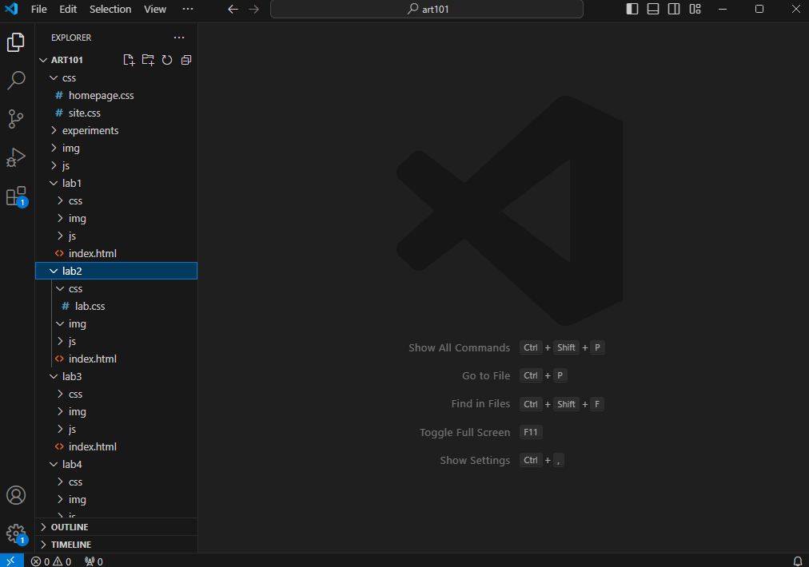
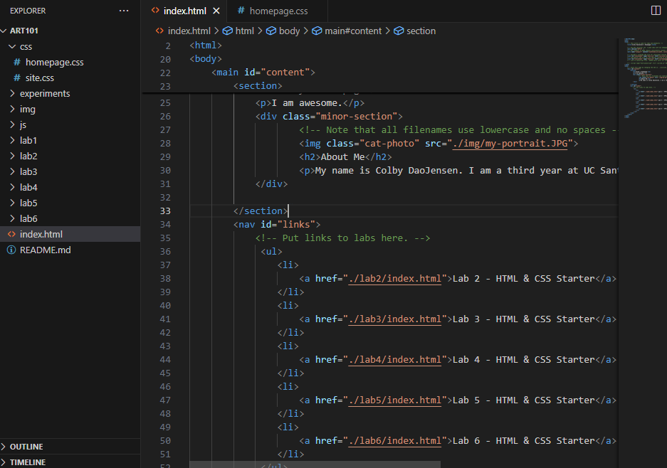
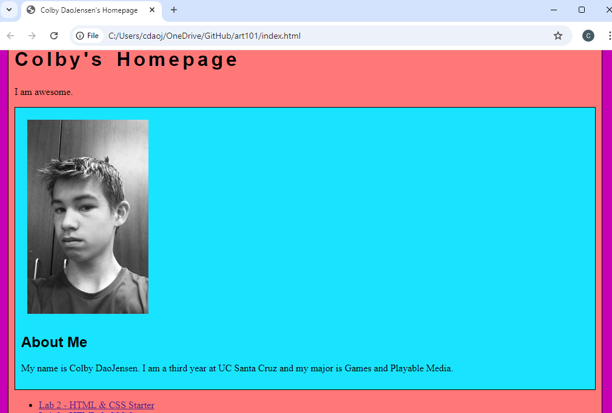
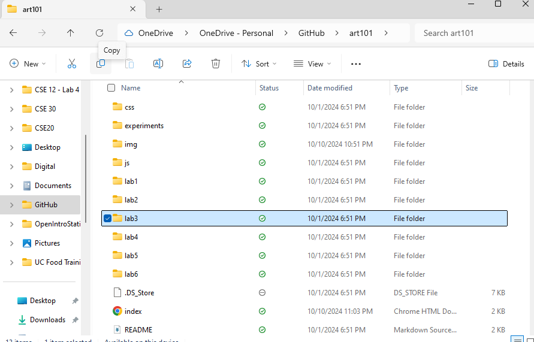
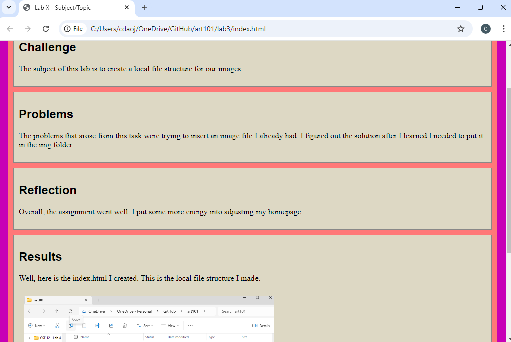
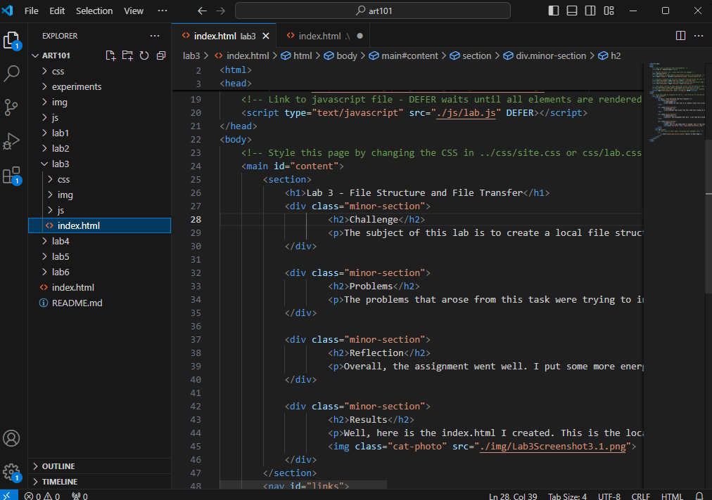

Lab 3 - File Structure and File Transfer
Challenge
The subject of this lab is to create a local file structure for our images.
Problems
The problems that arose from this task were trying to insert an image file I already had. I figured out the solution after I learned I needed to put it in the img folder.
Reflection
Overall, the assignment went well. I put some more energy into adjusting my homepage.
Results
(Above: Colby’s HTML page ready for local file structure)
(Above: Colby’s main page index.html code)
(Above: Colby’s main page index.html code in browser)
(Above: Colby’s local file structure for the lab3 index.html)
(Above: Colby’s lab3 html source code)
(Above: Colby’s lab3 index.html as shown in browser)